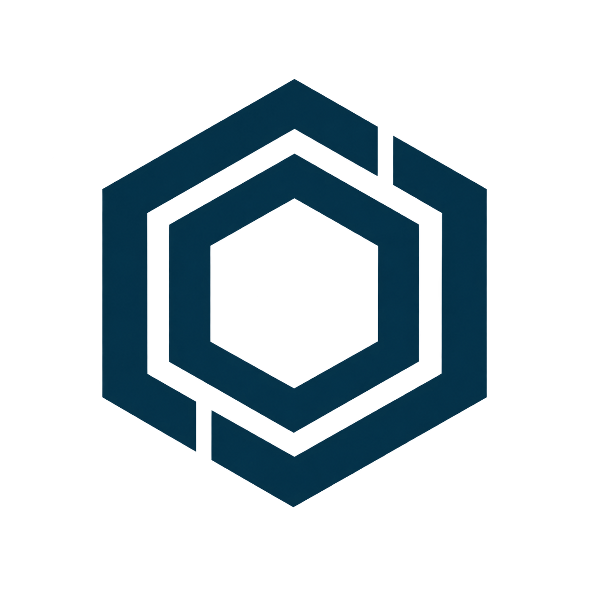

06C · Method
둥근 네 모서리의 교차 구조와 중앙 빈 공간
16px
32px
64px
타일
pydemia UI — Components
첨부한 네 심볼에서 글자와 발표용 배경을 제거했습니다. 16·32·64px와 어두운 타일을 비교할 수 있습니다. 선택 전 시안이며 사이트에는 적용되지 않았습니다.
둥근 네 모서리의 교차 구조와 중앙 빈 공간
둥근 연결 구조 안에 방향을 되돌리는 획
두 겹의 육각형 고리와 어긋난 절개

각진 리본의 엮임과 대각선 빈 공간